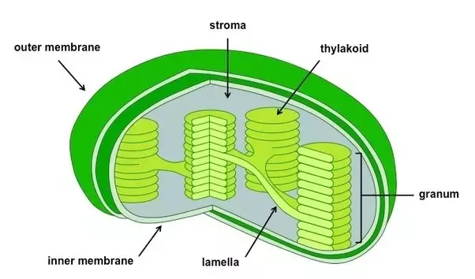

The structure of DNA
TOPICS: Heredity, Histology, Molecular Biology
Cells make up all of your body, as well as some fluids & molecules. Inside those cells are organelles, structures that perform different functions and are analogous to the organs in our bodies. Realizing that cell function and action are codependent on organelle function and action can be quite amazing - but will create a new inquiry, as some scientists, biologists, thinkers, educators, and even students may have: what controls the organelles? It may appear that the organelles may move to their own volition, but are likely controlled by DNA, the same molecule that is portrayed as a genetic code and an identifier for a specific person.
However, what is exactly DNA? How is it used to contain information?

DNA is a very large molecule. It has a insurmountable number of atoms in it, but we can have an idea on how is it divided. You see, DNA is made up of nucleotides - molecules that make up nucleic acids. Biologists have a word for nucleotides: "monomer" of a nucleic acid. They are composed of a nucleoside bound to a phosphate (PO43-) group. A nucleoside is a nitrogenous base bound to a pentose (C5H10O5) sugar.
The nitrogenous bases for DNA are: Adesine (A/ C5H5N5); Thymine (T/ C5H6N2O2); Guanine (G/ C5H5N5O); and Cytosine (C/ C4H5N3O).
The corresponding nucleosides are: Adenosine (C10H13N5O4); Thymidine (C10H14N2O5); Guanosine (C10H13N5O5); and Cytidine (C9H13N3O5).
There are affinities between nitrogenous bases, meaning that some bases are bound to other bases with a number of hydrogen bonds. A is bound to T with 2 H-bonds, and C is bound to G with 3 H-bonds. There is a mnemonic: "Apples in the Tree next to a Car in the Garage". VSEPR theory has given a 'sdiagonal' H bond between the tips of bases, giving a helix structure to DNA the same way as it gives the keylock structure of enzymes.
The function of the phosphate and the deoxyribose, a sort of pentose by structure, is that it makes a good background. As you can see on the left, they make a preety rigid backbone. The 5' and 3' ends are the directionality indicators, or the carbon numbers in the sugar backbone - whereas 5' has an attached phosphate group, the 3' has a hydroxyl (-OH) group/ is bound to a hydroxide molecule. DNA is like a vector by shape, in that it works in 5' to 3' (advances to a downwards direction).
How is chemistry related?
The structure of DNA is more or less related to its molecules' shapes. The shape of molecules is determined by the Valence Shell Electron Pair Repulsion Theory (VSEPRT). VSEPRT's maxim is that each atom in a molecule will achieve a geometry that minimizes the repulsion between electrons in an atom's valence shell. In other words, atoms are arranged in a way that minimizes instability due to 'lone electrons', electron/(pairs) that aren't part of a bond. Phosphates have a tetrahedral VSEPR molecular geometries; the dectoses/deoxyriboses, and even the nitrogenous bases have bent & trigonal planar VSEPR molecular geometries.
CH2O is the empirical formula of sugars, and is also the molecular & empirical formula of formaldehyde. Pentoses have the same empirical formula of sugars, since C5H10O5 is 'simplified' into CH2O. Adenine (C5H5N5) has an empirical formula of HCN, or prussic acid/ hydrogen cyanide.
Sources
Purdue's VSEPRT article
LiveScience's article on DNA Structure
ThoughtCo's article on the 5 kinds of Nucleotides
Inquiry of 5' and 3' (StackExchange)
Redoxes in Metabolism
TOPICS: Histology, Botany
Metabolism is defined as the chemical processes that keep the living state of cells & organisms. It can be divided into two categories: catabolism & anabolism. Catabolism is the breakdown of molecules to obtain energy, like cellular respiration & fermentation. Anabolism is the synthesis of molecules for structure of for food, like photosynthesis. All are partly governed by redox reactions!
Cellular Respiration
Occuring mostly in the mitochondria, cellular respiration involves the usage of glucose molecules in producing a lot of Adenosine Triphosphate (ATP). Typically, electrons as parts of a hydrogen atom (H) are transfered to the oxidizing agent, which gains energy in the process. Most energy is stored as high energy electrons that allow energy transfer & usage to be incremental.
Cells use ATP to store harvested energy in units (like a battery) for later use. In the hydrolysis of ATP into ADP, ADP, which has a removed phosphate group that has in the process emitted energy, has its phosphate group phosphorylate (bind to another molecule) and activate said molecule to do a function.
Some Vitamin-B derivatives function as easily-redoxed electron shuttles, binding & carrying electrons inbetween processes.
- Nicotanimide Adenine Dinucleotide (derived from Niacin) is oxidized into NAD+ or reduced into NADH.
- Flavin Adenine Dinucleotide (derived from Riboflavin) is reduced into FADH2.
In Substrate Phosphorylation, ATP can phosphorylate ADP. In Oxidative Phosphorylation, chemiosmosis involved aerobic phosphorylation that makes use of redox reactions.
The first step of cellular respiration is glycolysis, glucose is split into 2 pyruvate (C3H4O3) mollecules. With the aid of enzymes, glucose is:
- Phosphorylated to not permit exit to membrane.
- Isomerized to split sugar into two 3-carbon molecules
- Phosphorylated again to be turned into two isomers
- One kind of isomer is isomerized into another (Dihydroxyacetone-phosphate)
- Oxidized then phosphorylated, free electrons reduce NAD+
- Substrate-phosphorylates ADP and oxidized to a carboxyl
- Isomerized and dehydrated to increase chemical energy
- Then substrate-phosphorylates ADP to produce pyruvate.
Therefore, the net production is 2 ATP molecules, 2 NADH shuttles, and 2 Pyruvate molecules.
Next, pyruvate is oxidized by removing a carboxyl group and then to an acetyl group, reducing NAD+. The acetyl group is bound to a coenzyme A, forming Acetyl-CoA.
Acetyl-CoA gives its acetyl to oxaloacetate to form citrate, beginning the citric acid cycle.
- CoA bound to a sulfhydryl group has been formed as a byproduct of the citrate formation.
- Citrate converts into its isomer isocitrate by replacing water.
- Isocitrate oxidizes, reducing NAD+ to NADHH-.
- After oxidation, a-Ketoglutarate turns into succinyl and binds to CoA to form succinyl-CoA.
- CoA is replaced by a phosphate to form succinate and yield GTP/ATP.
- Succinate is dehydrated to Fumarating, reducing FAD. It is then rehydrated to malate.
- Malate is oxidized into oxaloacetate and reduces NAD+
The Net for Kreb's Cycle is 4 carbon dioxide atoms, 6 NADH shuttles, 2 FADH2 shuttles, and 2 ATP.
Oxygen is needed in the electron transport chain, a series of complexes, mobile accessory electron carriers, and proteins with a menagerie of elements/ substitutents in the mitochondrial membrane. A proton gradient is created by such pumps. To create equilibrium, an ion channel must aid the hydrons (ATP synthase) that powers the phosphorylation of ADP into ATP. Oxygen is to be oxidized into water by the hydrogen pumps.
Photosynthesis
In photosynthesis, ATP, carbon dioxide (CO2) and water react to create a sugar glucose (C6H12O6) and oxygen gases. This typically occurs in the autotroph cell's chloroplasts, specifically mesophyll chloroplasts that reside in the leaf parenchyma. It is mostly composed of light reactions (processes that require light/ the 'photo') and dark reactions (light-independent Calvin cycle, the 'synthesis').

In light reactions 2 photosystems are involved (PS1 with P700 and PS2 with P680):
- Light will hit P700, a pigment. P700 excites electrons to another level in noncyclic/cyclic electron flow.
- P700 is oxidized, NADP+ is then reduced into NADPH.
- Photons hit P680, exciting electrons for P700 to produce ATP through noncycling phosphorylation.
- P680 is oxidized, but can oxidize water to produce hydrons and oxygen, reducing P680 through the aid of manganic ions.
- ATP is phosphorylated by the proton gradient and the chloroplast membrane, the thylakoid membrane.
With NADPH providing electrons and ATP providing chemical energy for the Calvin Cycle, Rubisco transforms carbon dioxide into a sugar to be synthesized into glucose and other organic compounds, cycling NADP+ and ADP with an inorganic phosphate ion:
- Carbon-Fixation: Rubisco fixates a carbon from carbon dioxide and binds it tp RuBP, splitting the intermediate into 3-Phosphoglycerate
- Reduction - ATP phosphorylates 3PG and NADPH then reduces it into G3P.
- Carbohydration - G3P is now used to create sugars like glucose.
- Recycling - some G3P will be used to create RUBP using ATP.
How is chemistry related?
Redox reactions are reactions that involve reduction and oxidation. Oxidation is the increase in positive charge of a compound, and reduction the deduction thereof. They always work in tandem, and the one oxidized is the reducing agent while the reduced is the oxidizing agent. Another interpretation to the redox is that a reduced molecule has more electrons than its grounded molecule, and an oxidized molecule has less electrons. NAD, NADP, and FAD have their oxidized and reduced forms, and function as electron shuttles.
Sources
News-Medical's article on Metabolism
LibreText's dedicated anthology of articles about Cellular Respiration
Libretext's dedicated anthology of articles about Photosynthesis